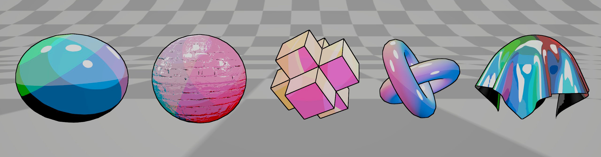

NPR Toon Shader프로젝트에서는 기본적인 Toon Shader 뿐만 아니라, Outline shader, 그리고 Shader GUI를 통해 완전히 커스텀된 material을 만드는 것을 목표로 진행되었다. 기본적으로 유니티에서 제공해주는 render type, cull 설정 포함 및 Normal map, roughness map, fog적용과 같은 것들이 구현되었다. 좌측은 3개의 색상을 사용하여 gradient를 만든 예시이다. 우측은 Ramp Texture를 기반으로 한 셰이더이다.
+ Floor를 활용한 전통적인 Toon Shader 또한 만들어 봤는데 여기서는 유니티에서 제공하는 감쇠값이 아닌 선형 감쇠값을 만들어서 사용했다. 더 균등한 넓이의 암부표현을 볼 수 있었다.
+ 3가지 색상을 활용한 gradient shader.
+ Ramp Texture를 활용하여 암부표현.

△